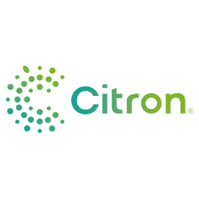
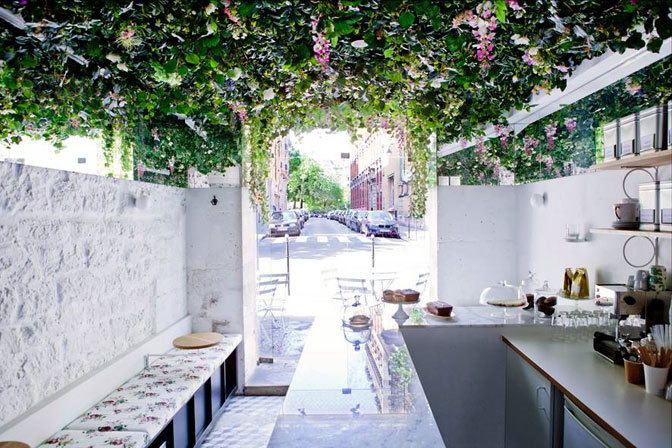
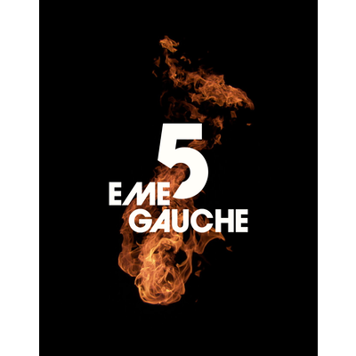
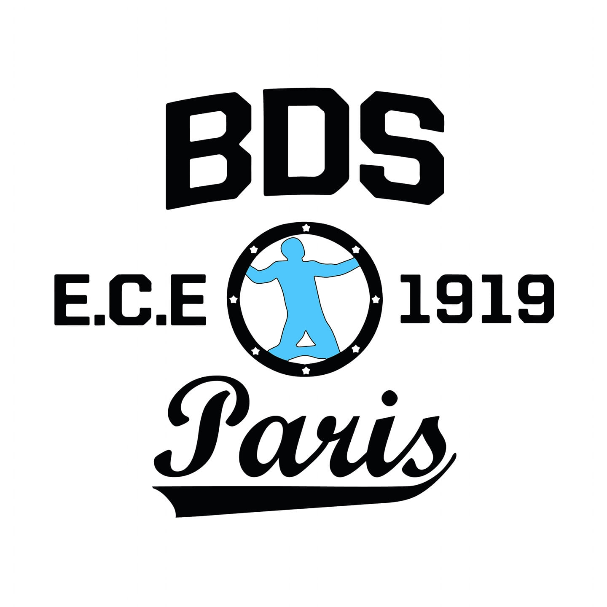
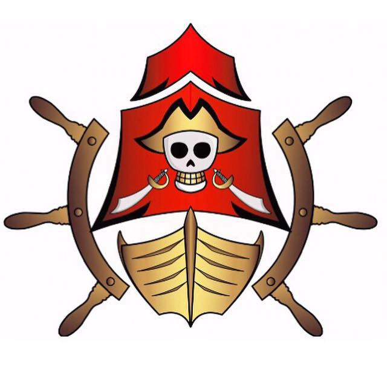
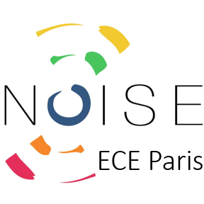
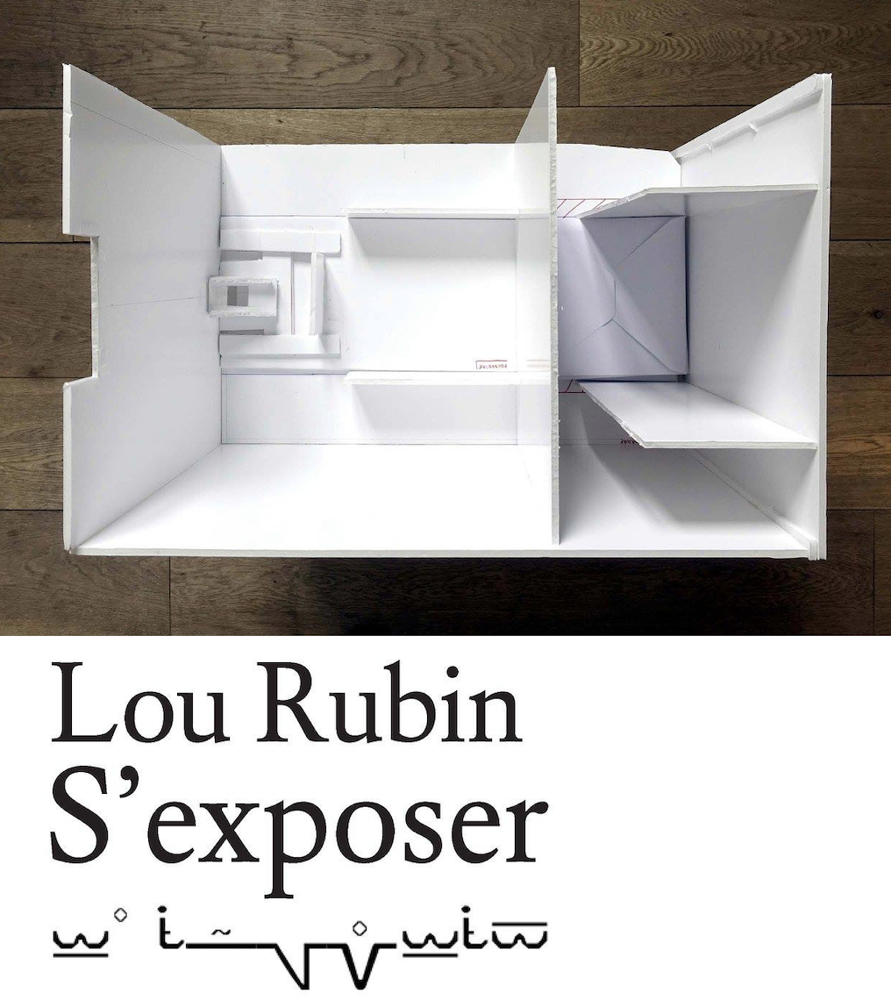
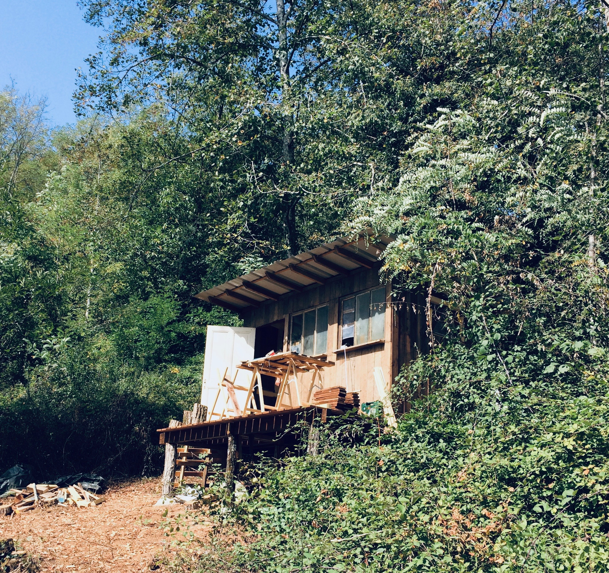
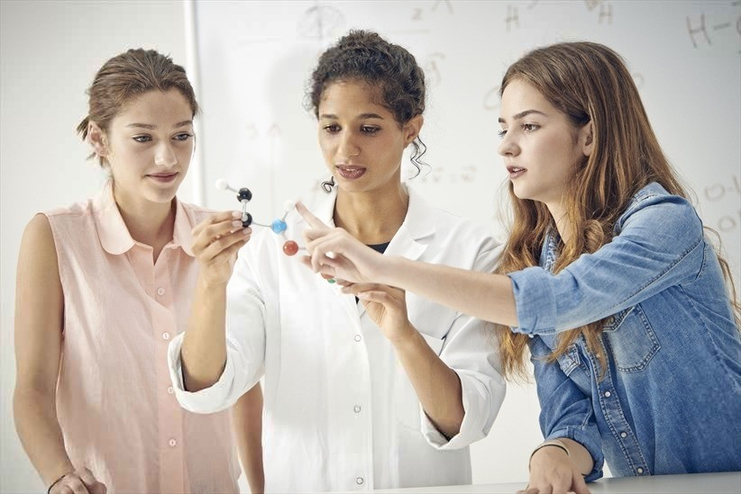

Zoé Compoint
21 ans
Étudiante Ingénieure
Spécialisée en Objets Connectés, Réseaux et Servcies.
Actuellement en recherche de stage pour 5 mois dans le domaine du developpement durable.
Parcours scolaire
2015
École Centrale Electronique Paris (ECE Paris)
Classe préparatoire intégrée.
2018
Bangor University, Pays de Galle
Échange Erasmus d'un semestre.
2019
École Centrale Electronique Paris (ECE Paris)
Spécialisation en OCRES.
Expériences professionelles

Assistante recherche et developpement
Stage - 1 mois
Livraison client sur la plateforme Citron®, dédiée à l'efficience énergétique des bâtiments.

Responsable de table
CDD - 1 an
Vendeuse, Serveuse et responsable du réapprovisement dans le salon de thé Lilly of The Valley, Paris 3 ème.

Developper
Stage - 1 mois
Developper dans l'agence de communication 5 ème Gauche. En charge de l'installation d'un système connecté avec l'API de Twitter pour l'entreprise.

VP Logistique
Membre association - 1 an
Vice-présidente logistique au sein du Bureau Des Sports de l'ECE Paris. En charge de la logistique du matériel sportif, aide à l'organisation d'evenements et d'un voyage au ski pour 200 étudiants.

Responsable association
Membre association - 1 an
Membre active de l'association dédié à l'organisation du séminaire d'intégration des 700 étudiants de première année à l'ECE Paris.

VP communication
Membre association - 1 an
Vice-présidente en communiaction dans l'assocation à impacts sociaux et environnementaux de l'ECE Paris.
Projets



Mes Compétences
HTML
90%
CSS
80%
JavaScript
65%
PHP
60%